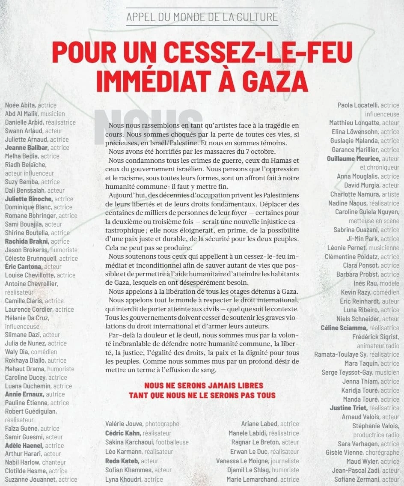

Publication d’archives
Appel du monde de la culture pour un cessez-le-feu immédiat à Gaza.
Date indiquée par Facebook · 23 octobre 2023
Texte conservé avec la publication
Appel du monde de la culture pour un cessez-le-feu immédiat à Gaza.
#Paix #Justice #Israel #Palestine
Nous ne serons jamais libres tant que nous ne le serons pas tous.

Sources
Archive rouge · export Facebook · AR-0002-FB-01557
À lire aussi · Un numéro hors-série de #LHumanité sur la guerre à #Gaza. Les clés pour comprendre. Ce numéro spécial se veut…